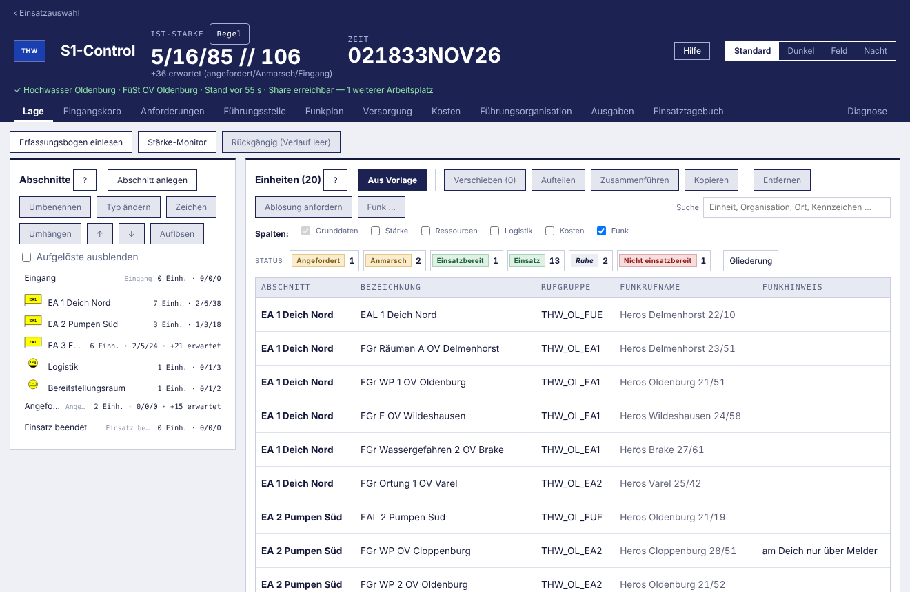

Die Anwendung wurde mehreren Helfern vorgeführt; alle fanden sie überladen. Runde 6 ändert nicht die Gestaltung (Runde 2, Option 2a), sondern was wann sichtbar ist: zwei Kopfzeilen statt vier, Reiter nach Profil, ein Hauptknopf je Karte und ein Menü „⋯" für den Rest, Werkzeuge erst mit der Auswahl (Auswahlleiste und Kontextmenü), jede Zahl einmal. Nichts fällt weg, alle Kürzel bleiben. 6a ist der Ist-Zustand mit Zählung, 6b und 6c das Blatt Lage ohne und mit Auswahl, 6d das Kopfband je Profil, 6e die Bausteine, 6f der Funkplan nach demselben Muster, 6g die Einsatzauswahl. Leitsätze, Entscheidungen, Schnitte und offene Fragen in KONZEPT-ENTLASTUNG.md.
| Blatt Lage, 1320×860, nichts gewählt | heute (6a) | Entwurf (6b) |
|---|---|---|
| Zeilen im Kopfband | 4 | 2 |
| Reiter | 11 | 5 + Mehr |
| bedienbare Elemente über der ersten Einheit | 54 | 19 |
| erste Einheit bei | 457 px | 300 px |
| Angaben, die zweimal stehen | 4 | 0 |
| Spalten bis zur Stärke | 14 | 6 |

Aufnahme des gebauten Renderers (../funkplan/stand/einheitentabelle-funk.png), 1320×860, Theme Standard. 54 bedienbare Elemente vor der ersten Einheit, die bei 457 px beginnt; Stärke und Stand stehen je zweimal. Die Zahlen stehen in KONZEPT-ENTLASTUNG.md, Abschnitt 1.
| Bezeichnung | Org. | Herkunft | Status | Schicht | Fü / UFü / He | Gesamt | Verfügbar bis |
|---|---|---|---|---|---|---|---|
| EALEA 1 Deich Nord6 Einheiten | 2/6/38 | 46 | |||||
| EAL 1 Deich Nord | THW | OV Oldenburg | Einsatz | Tag 06–18 | 1/1/2 | 4 | — |
| FGr Räumen A OV Delmenhorst | THW | OV Delmenhorst | Einsatz | Tag 06–18 | 0/1/8 | 9 | 03.11. 18:00 |
| FGr WP 1 OV Oldenburg | THW | OV Oldenburg | Einsatz | Tag 06–18 | 0/1/10 | 11 | — |
| FGr E OV Wildeshausen | THW | OV Wildeshausen | Einsatzbereit | Tag 06–18 | 0/1/6 | 7 | — |
| FGr Wassergefahren 2 OV Brake | THW | OV Brake | Einsatz | Nacht 18–06 | 1/1/6 | 8 | — |
| FGr Ortung 1 OV Varel | THW | OV Varel | Ruhe | Tag 06–18 | 0/1/6 | 7 | — |
| EALEA 2 Pumpen Süd3 Einheiten | 1/3/18 | 22 | |||||
| EAL 2 Pumpen Süd | THW | OV Oldenburg | Einsatz | Tag 06–18 | 1/1/2 | 4 | — |
| FGr WP OV Cloppenburg | THW | OV Cloppenburg | Einsatz | Tag 06–18 | 0/1/8 | 9 | 04.11. 06:00 |
| FGr WP 2 OV Oldenburg | THW | OV Oldenburg | Einsatz | Nacht 18–06 | 0/1/8 | 9 | — |
| EALEA 3 Evakuierung4 Einheiten · +21 erwartet | 2/5/24 | 31 | |||||
| EAL 3 Evakuierung | THW | OV Oldenburg | Einsatz | Tag 06–18 | 1/1/2 | 4 | — |
| Betreuungszug DRK KV Oldenburg | DRK | KV Oldenburg | Einsatz | Tag 06–18 | 1/3/16 | 20 | — |
| 1. Zug FF Hude | FW | FF Hude | Einsatz | Tag 06–18 | 0/1/6 | 7 | — |
| 2. Zug FF Hude | FW | FF Hude | Anmarsch | Nacht 18–06 | 0/2/19 | 21 erw. | — |
| Logistik1 Einheit | 0/1/3 | 4 | |||||
| Ltg Logistik | THW | OV Oldenburg | Ruhe | Tag 06–18 | 0/1/3 | 4 | — |
Kopfband mit Einsatzname, Ist-Stärke, Zeit, Zustandsmarke und Fenstermenü „⋯"; darunter die fünf Reiter des Profils S1 und „Mehr". Die Werkzeugzeile der Lage ist weg: Bogen einlesen steckt in „Einheit anlegen ▾", der Monitor im Fenstermenü, Rückgängig steht rechts in der Statuszeile mit dem Namen des letzten Schritts. Die Einstiegszeile erscheint beim ersten Aufschlagen des Blatts und dann nie wieder. Ohne Auswahl im Baum steht die Tabelle in Gliederung nach Bereich; die Spalte Abschnitt entfällt, weil der Baum sie trägt. 19 bedienbare Elemente vor der ersten Einheit, die bei rund 300 px beginnt.
| Bezeichnung | Org. | Herkunft | Status | Schicht | Fü / UFü / He | Gesamt | Verfügbar bis |
|---|---|---|---|---|---|---|---|
| EAL 1 Deich Nord | THW | OV Oldenburg | Einsatz | Tag 06–18 | 1/1/2 | 4 | — |
| FGr Räumen A OV Delmenhorst | THW | OV Delmenhorst | Einsatz | Tag 06–18 | 0/1/8 | 9 | 03.11. 18:00 |
| FGr WP 1 OV Oldenburg | THW | OV Oldenburg | Einsatz | Tag 06–18 | 0/1/10 | 11 | — |
| FGr E OV Wildeshausen | THW | OV Wildeshausen | Einsatzbereit | Tag 06–18 | 0/1/6 | 7 | — |
| FGr Wassergefahren 2 OV Brake | THW | OV Brake | Einsatz | Nacht 18–06 | 1/1/6 | 8 | — |
| FGr Ortung 1 OV Varel | THW | OV Varel | Ruhe | Tag 06–18 | 0/1/6 | 7 | — |
| Ist-Stärke EA 1 Deich Nord | 2/6/38 | 46 | |||||
EA 1 Deich Nord ist gewählt: die Tabelle zeigt nur seine Einheiten, flach, mit Ist-Stärke als Summenzeile; die gewählte Baumzeile trägt „⋯". Die Zeile FGr WP 1 ist gewählt: Am Fuß der Karte erscheint die Auswahlleiste mit den sieben Schritten, die eine Einheit braucht, und nur jetzt. Rechtsklick auf die Zeile öffnet dieselben Schritte als Kontextmenü (gezeigt). In der Statuszeile die Bestätigung des letzten Schreibens und daneben Rückgängig mit seinem Namen.
Das Profil ist eine Einstellung dieses Arbeitsplatzes (neben Anzeigename und Betriebsart). Es bestimmt, welche Reiter im Band stehen; alle anderen Blätter stehen unter „Mehr". Die Zustandsmarke rechts oben sagt in einem Wort, ob dem Bild zu trauen ist, und führt es im Tooltip aus; die ausführliche Zeile bleibt der Statuszeile am Fuß vorbehalten. „Alle Blätter" ist das heutige Band für den, der es so will.
Alle Menüs sind Elemente des Renderers (gleich in Electron und Web-Schale), eckig, mit Kürzeln rechts in Mono. Ein Eintrag, der gerade nicht geht, steht grau mit dem Grund („2 wählen"). Die Statuszeile ist der eine Ort für Stand, Share, Arbeitsplätze, Warnungen, Bestätigung und Rückgängig; die Stärke steht nur noch im Kopfband.
| Betrieb | Name · Zweck | Einh. |
|---|---|---|
| TMO | THW_OL_FUEFührung · FüSt ↔ Abschnitte · hört FmZ Platz 1 | 5 |
| TMO | ZA_OL_HW_1Zusammenarbeit · Kreis OL, FF, JUH · hört FmZ Platz 2 | 3 |
| TMO | THW_OL_EA1Arbeitsgruppe EA 1 Deich Nord | 4 |
| TMO | THW_OL_EA2Arbeitsgruppe EA 2 Pumpen Süd | 3 |
| DMO | DMO 310EA 3 Evakuierung · Netz gestört · Gateway Heros Varel 25/10 | 3 |
| Analog | 2 m Kanal 55 G/UOrtsfunk FF Hude · bis Umstellung · Melder BR | 0 |
| TMO | THW_OL_BRaufgelöst 1832 | 0 |
| Einheit | Bereich | Status | Rufgruppe | Funkrufname | Letzter Kontakt | Hinweis |
|---|---|---|---|---|---|---|
| TMOTHW_OL_FUEFührung · FüSt ↔ Abschnitte · 5 Teilnehmer · hört FmZ Platz 1 | ||||||
| EAL 1 Deich Nord | EA 1 Deich Nord | Einsatz | THW_OL_FUE | Heros Delmenhorst 22/10 | 1812 | ZFü über FmZ |
| EAL 2 Pumpen Süd | EA 2 Pumpen Süd | Einsatz | THW_OL_FUE | Heros Oldenburg 21/19 | 1705 · 88 min | — |
| EAL 3 Evakuierung | EA 3 Evakuierung | Einsatz | THW_OL_FUE | Heros Varel 25/11 | 1820 | — |
| Ltg Logistik | Logistik | Ruhe | THW_OL_FUE | Heros Oldenburg 21/10 | 1750 | — |
| Ltg Bereitstellungsraum | Bereitstellungsraum | Einsatzbereit | THW_OL_FUE | Heros Brake 26/10 | 1630 · 123 min | — |
| TMOZA_OL_HW_1Zusammenarbeit · Kreis OL, FF, JUH · 3 Teilnehmer · hört FmZ Platz 2 | ||||||
| KFB Kreis Oldenburg | EA 1 Deich Nord | Einsatz | ZA_OL_HW_1 | Florian OL-Land 10/1 | 1801 | — |
| 2. Zug FF Hude | EA 3 Evakuierung | Anmarsch | ZA_OL_HW_1 | Florian Hude 20/1 | — | Ortsfunk bis Umstellung |
| Betreuungszug DRK KV Oldenburg | EA 3 Evakuierung | Einsatz | ZA_OL_HW_1 | Rotkreuz Oldenburg 41/1 | 1744 | — |
| ohne Rufgruppe2 Einheiten · Doppelklick auf „Rufgruppe" ordnet zu | ||||||
| FGr Ortung 1 OV Varel | EA 1 Deich Nord | Ruhe | — | Heros Varel 25/42 | — | — |
| 1. Zug FF Hude | EA 3 Evakuierung | Einsatz | — | Florian Hude 10/1 | — | — |
Das Kennzahlenband bleibt, es ist die Arbeit der Vermeldezentrale in Zahlen. Die Werkzeugzeile schrumpft auf Umschalter, Hauptknopf, Suche und „⋯" (Schwelle, Ausdruck). Funkprobe, „kein Kontakt" und die Funkmaske stehen in der Auswahlleiste der gewählten Einheit; die gewählte Rufgruppe hat ihre eigene Leiste links. Die Spalte „Letzter Kontakt" trägt das Alter in Bernstein, sobald es die Schwelle übersteigt.
Die Liste der Einsätze ist die Fläche; „Neuer Einsatz …" öffnet eine Maske mit Name, Datum und Stammdaten. Die Einstellungen des Arbeitsplatzes stehen in einer Zeile mit je einem Satz, was das Feld bewirkt; „Ändern" öffnet sie. Darunter die Profilwahl, wie sie in dieser Maske aussieht (hier aufgeklappt gezeigt).